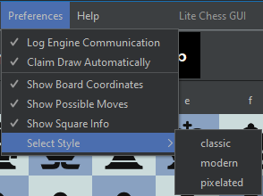
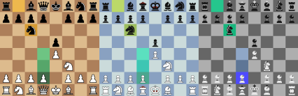

Az alkalmazás személyre szabása
A Preferences menü alpontjaival személyre szabhatja az alkalmazás kinézetét, és viselkedését.
A beállítások magyarázata
- Log Engine Communication: Az alkalmazás és az enginek közözzi komunikáció naplózása az enginecom.log fájlba.
- Claim Draw Automaticalli: Ha az emberi játékos döntetlent igényelhetne, ezt az alkalmazás automatikusan megteszi helyette.
- Show Board Coordinates: Jelölés megjelenítése/elrejtése a sakktábla szélén (a-h, 1-8)
- Show Possible Moves: Lehetséges lépések megszínezése ki/be kapcsolható
- Show Square Info: Legutóbbi lépés és sakk állás megszínezése ki/be kapcsolható
- Select Style: A megjelenő alpontokra kattintva álaszthat az elérhető stílusok közül. Ezek a stílusok a sakktábla kinézetét változtatják. Létrehozhat saját stílust is, ehhez olvassa el ezt az oldalt
Alap stílusok
Az alkalmazás alapból 3 különböző stílussal érkezik: Modern (bal) Classic (közép), és Pixelated (jobb):
